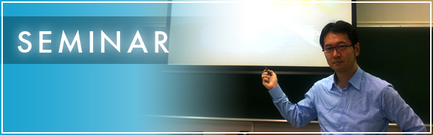

2022年度 成蹊大学担当講義
| 前期 | 後期 |
|---|---|
| ファイナンスA(R) 国際経済学A(R) エリアスタディーズ(R) 上級ゼミナールI、II(R,P)／卒業研究(R,P) | Strategic Management and Innovation(R) ファイナンスB(P) 国際経済学B(R) グローバル経済論(R) 上級ゼミナールII(R,P)／卒業研究(R,P) |
※表中の(R)、(P)は各講義内においてRもしくはPythonによる理論実装演習を行うことを意味します。
上級演習／卒業演習
１．テーマ：ESG投資と企業の経営戦略
２．概要：
上級演習 企業から受けた課題についてデータサイエンス分析を行い、最終報告会を実施する産学連携ゼミナールです。3年修了時にはRとPythonを用いてマーケットβ値の推計、モンテカルロ法、機械学習による株価予測、効率的フロンティア導出ができるようになります。テーマは毎年、異なります。
卒業演習 ３年時の産学連携演習を発展させ、４年生各々が持つ学術的関心をPythonによるAPIを通じて各企業、国際機関から財務データ・株価データ・マクロ経済データを入手し、実証研究を進めます。
３．過去のプロジェクト演習 課題例
2013年度 家電メーカー A社「耐久消費財需要とデザインの関係の研究」
2014年度 野村證券㈱ 「マーケットで勝つ最適ポートフォリオの研究」
2014年度 みずほ総合研究所㈱ 「政策提言型シンクタンク経営の可能性について」
2015年度 富士通㈱ 「若年世代のノート型PC需要の決定要因」
2016年度 ㈱横浜銀行 「銀行店舗の地理的分布の空間分析」
2017年度 ㈱日本政策金融公庫 「若者の起業を促す要因」
2020年度 ブルームバーグ 「企業のESG投資と最適ポートフォリオ」
2021年度 ブルームバーグ 「企業のESG投資と最適ポートフォリオ」
４．活動スケジュール
| 2022年度 年間スケジュール | |
|---|---|
| 4月 | プロジェクト演習 前期課題説明会 |
| 5月 | ブルームバーグ・コンテスト応募 |
| 7月 | プロジェクト演習 学内発表会 プロジェクト演習 最終報告会 |
| 7月 | ブルームバーグ・コンテスト報告書・ポートフォリオ表提出〆切 |
| 10月 | プロジェクト演習 後期課題説明会 ゼミ個別相談会（2年生対象） |
| 1月 | プロジェクト演習 学内発表会 プロジェクト演習 最終報告会 |
５．ゼミ選考基準
[応募状況]
2013年度の開講以来、2022年度を除き、1次選考は応募者10名弱のため全員合格、2次選考で定員に達するパターンが続いています。
[選考基準]
面接では次の3つの基準を参考に選考しています。
（１）GPA (Grade Point Average) （２）志望動機 （３）TOEICスコア他
６．主なゼミOB・OGの進路（2013－16年度）
日本生命保険相互会社 オリンパス株式会社 株式会社大和証券 凸版印刷株式会社 株式会社横浜銀行
フィデリティ投信株式会社 三井住友信託銀行株式会社 株式会社SBI証券 エノテカ株式会社 群馬銀行株式会社 株式会社帝国データバンク 株式会社日産フィナンシャルサービス 株式会社三井住友銀行他
※詳細は直接お尋ねください。


COPYRIGHT © 2013-2022 MAMORU NAGANO ALL RIGHTS RESERVED.